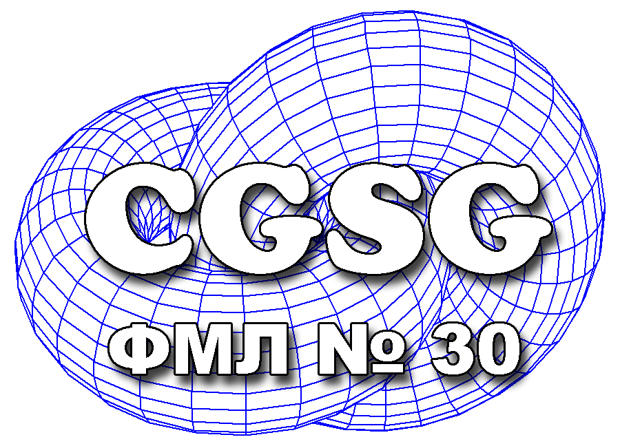
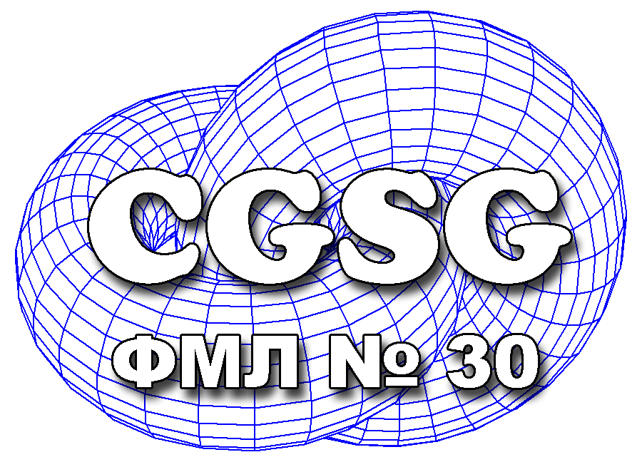

Язык программирования
Лекция № 2
Владимир Владимирович Руцкий rutsky.vladimir@gmail.com
|  | 
|
Лекция № 2
Владимир Владимирович Руцкий rutsky.vladimir@gmail.com
|  |
|
Программы на Python пишутся внутри *.py файлов — модулей
Модули можно выполнять (python.exe hello.py):
def my_hello():
print("Hello, world!")
if __name__ == "__main__":
my_hello()
Объекты из модулей можно использовать в других модулях (или в интерактивном режиме) с помощью команды import:
>>> import hello
>>> hello.my_hello()
'Hello, World!'
>>>
>>> import random
>>> random.random() # Случайное float число в диапазоне [0, 1)
0.5827532718821743
>>> random.randint(15, 30) # Случайное int число в диапазоне [15, 30]
29
>>> random.uniform(3.5, 10.0) # Случайное float число из диапазона [3.5, 10.0]
7.332874018578613
>>> # Есть некоторые популярные распределения: равномерное, Бета, экспоненциальное,
... # Гамма, Гаусса, Нормальное, Парето
... random.gauss(mu=0, sigma=1)
0.512533053672749
>>> a = ['Alice', 'Bob', 'Valery']
>>> random.choice(a) # Вернёт произвольный элемент последовательности
'Valery'
>>> random.shuffle(a) # Случайным образом перемешает последовательность
>>> a
['Alice', 'Valery', 'Bob']
>>>
>>> # При импортировании модуля его можно "переименовать"
... import random as rnd
>>> rnd.random()
0.5827532718821743
>>> # Можно импортировать только некоторые имена в локальную область видимости
... from random import choice
>>> choice(['a', 'b', 'c', 'd'])
'b'
>>> # Можно импортировать имя из модуля, и переименовать его:
... from random import uniform as unf
>>> unf(-3, 3)
-2.519376744749322
>>> # Можно импортировать несколько модулей в одной команде (не рекомендуется)
... import random, os, sys
>>> sys.platform
'linux'
>>> # Можно импортировать несколько имён из модуля:
... from random import gammavariate as G, choice, uniform as unf
>>> # При импортировании имён из модулей в текущей области видимости создаются
... # ссылки на объекты из импортируемых модулей, копирования не происходит:
... rnd is random
True
>>> rnd.choice is choice
True
>>>
>>> # Можно импортировать все имена из модуля в текущую область видимости:
... from random import *
>>> choice(['a', 'b', 'c', 'd'])
'b'
>>> random()
0.5827532718821743
>>> dir()
[..., 'betavariate', 'choice', 'expovariate', 'gammavariate', 'gauss', 'getrandbits', ...]
>>>
from ... import * не импортирует имена, начинающиеся с подчеркивания — в Python принято называть "скрытые" функции и имена с подчеркивания
# rndcolors1.py
from random import choice
colors = ["red", "green", "blue"]
def random_color():
return choice(colors)
>>> from rndcolors1 import *
>>> dir()
[..., 'choice', 'colors', 'random_color']
>>>
# rndcolors2.py
from random import choice
_colors = ["red", "green", "blue"]
def random_color():
return random.choice(_colors)
>>> from rndcolors2 import *
>>> dir()
[..., 'choice', 'random_color']
Если в модуле объявлена глобальная переменная __all__, то с помощью from ... import * из этого модуля будут импортироваться только имена, перечисленные в списке или кортеже __all__
# rndcolors3.py
from random import choice
__all__ = ["random_color"]
colors = ["red", "green", "blue"]
def random_color():
return random.choice(colors)
>>> from rndcolors3 import *
>>> dir()
[..., 'random_color']
>>> # Встроенные функции находятся в специальном модуле `builtins'
... import builtins
>>> builtins.print('Test!')
Test!
>>> builtins.print is print
True
>>>
Модули можно объединять в пакеты:
sound/ Пакет верхнего уровня
__init__.py Инициализация пакета работы со звуком (sound)
formats/ Подпакет для конвертирования форматов файлов
__init__.py
wavread.py (чтение wav)
wavwrite.py (запись wav)
effects/ Подпакет для звуковых эффектов
__init__.py
echo.py (эхо)
surround.py (фон)
reverse.py (обращение)
Использование:
# Импортируем модуль sound/effects/echo.py
import sound.effects.echo
sound.effects.echo.echofilter(input, output, delay=0.7, atten=4)
или:
from sound.effects import echo
echo.echofilter(input, output, delay=0.7, atten=4)
Пакет — директория, содержащая модули и/или пакеты
Модуль можно превратить в пакет (и наоборот):
sum как модуль:
sum.py:
def my_sum(a, b):
return a + b
sum как пакет:
sum/__init__.py:
def my_sum(a, b):
return a + b
Использование одинаковое:
>>> import sum
>>> sum.my_sum(10, 20)
30
>>>
1 2 3 4 5 6 7 8 9 10 11 12 13 14 15 16 17 18 19 20 21 22 23 24 25 26 | >>> # Функция dir() позволяет получить список членов (атрибутов) объекта
... a = 30
>>> dir(a)
['__abs__', '__add__', '__and__', '__bool__', '__ceil__', '__class__', ...
>>> a.__add__(3)
33
>>> def f(a, b):
... """Вычисляет сумму двух чисел"""
... c = a + b
... return c
...
>>> dir(f)
['__annotations__', '__call__', '__class__', '__closure__', '__code__', ...
>>> f.__name__
'f'
>>> f.__doc__
'Вычисляет сумму двух чисел'
>>> f.__code__.co_varnames # интроспекция — доступ к внутренней информации об объектах
('a', 'b', 'c')
>>> # Вызванная без аргументов, dir() возвращает список доступных имён в локальной
... # области видимости.
... dir()
['__builtins__', '__doc__', '__loader__', '__name__', '__package__', 'a', 'f']
>>> __name__
'__main__'
>>>
|
Прямые способы:
Интерактивный режим:
>>> a = 10
Запуск модуля:
C:\>C:\Python33\python.exe hello.py
Hello!
C:\>
Выполнение команд, непосредственно переданных интерпретатору:
C:\>C:\Python33\python.exe -c "a = 10; print(a)"
10
C:\>
Запуск модуля, доступного в текущем дистрибутиве Python:
C:\>C:\Python33\python.exe -m random
2000 times random
0.001 sec, avg 0.500839, stddev 0.287432, min 0.000557505, max 0.999779
2000 times normalvariate
0.003 sec, avg 0.0308376, stddev 1.02038, min -3.30629, max 3.85466
...
C:\>
Косвенные способы — при импортировании модулей:
>>> import random # В результате этой команды модуль будет интерпретирован
>>>
module.py:
print("This module '__name__' variable is:", __name__)
При прямом способе выполнения команды, вводимые в интерактивном режиме, или из интерпретируемого модуля, или из аргументов к python.exe -c, выполняются в виртуальном модуле с именем __main__:
C:\>C:\Python33\python.exe module.py
This module '__name__' variable is: __main__
C:\>
При интерпретировании модуля в результате импортирования (косвенный способ выполнения) __name__ будет указывать на имя модуля:
>>> import module
This module '__name__' variable is: module
С помощью __name__ можно определить импортирован ли модуль, либо он выполняется напрямую
Типичное использование в библиотеках — при запуске библиотечного модуля запускать тесты; even.py:
1 2 3 4 5 6 7 8 9 10 11 12 13 14 | def is_even(number):
"""Возвращает True, если number — чётный"""
if number % 4 == 0: # Ошибка
return True
return False
def _test():
assert is_even(4)
assert not is_even(3)
assert is_even(-20)
assert is_even(2)
if __name__ == "__main__":
_test()
|
C:\>C:\Python33\python.exe -m even.py
Traceback (most recent call last):
File "module_test.py", line 17, in <module>
_test()
File "module_test.py", line 13, in _test
assert is_even(2)
AssertionError
C:\>
1 2 3 4 5 6 7 8 9 10 11 12 13 14 15 16 17 18 19 20 21 22 23 24 25 26 27 28 29 | # Шаблон программы на Python
#
# Это комментарий. Любую программу стоит начинать с описания того,
# для чего она предназначена.
# Импортируем необходимые модули
import sys
def main():
"""Main program function"""
# sys.argv содержит список аргументов командной строки.
# sys.argv[0] хранит имя запущенного скрипта.
if len(sys.argv) == 1:
print("Ошибка! Слишком мало аргументов!")
sys.exit(1)
else:
print("Программа", sys.argv[0], "была запущена с аргументами:")
for arg in sys.argv[1:]:
print(arg)
if __name__ == "__main__":
# Если скрипт запущен как "python.exe template.py",
# то это условие будет выполнено и будет вызвана main().
# Впоследствии можно будет написать тесты, которые будут
# импортировать этот модуль и вызывать функции из него.
main()
|
C:\>C:\Python33\python.exe template.py
Ошибка! Слишком мало аргументов!
C:\>C:\Python33\python.exe template.py Питон 1 2 3
Программа template.py была запущена с аргументами:
Питон
1
2
3
"pretty-print". Выводит на экран текстовое представление объекта с отступами и переносами строк
То же, что и просто print(), но форматированное
>>> john = {"name": "John", "age": 30, "graduate": ["30", "SPBSTU", "MIT"]}
>>> kate = {"name": "Kate", "age": 28, "graduate": ["85", "SPBSTU"]}
>>> people = [john, kate]
>>> print(people)
[{'age': 30, 'graduate': ['30', 'SPBSTU', 'MIT'], 'name': 'John'}, {'age': ...
>>> import pprint
>>> pprint.pprint(people)
[{'age': 30, 'graduate': ['30', 'SPBSTU', 'MIT'], 'name': 'John'},
{'age': 28, 'graduate': ['85', 'SPBSTU'], 'name': 'Kate'}]
>>>
Возвращает строку с результатом, вместо печати на экран
В Python имена — это метки, ссылающиеся на объекты в памяти (связанные с объектами, binded)
Чтобы создать новую метку (или переопределить старую) можно использовать:
команду присваивания:
a = 30
команду определения функции (или класса):
def my_sum(x, y):
return x + y
команду import:
import random
>>> import pprint
>>> # Содержимое текущей (локальной) области видимости можно получить
... # с помощью locals() (только на чтение)
... pprint.pprint(locals())
{'__builtins__': <module 'builtins' (built-in)>,
'__doc__': None,
'__loader__': <class '_frozen_importlib.BuiltinImporter'>,
'__name__': '__main__',
'__package__': None,
'pprint': <module 'pprint' from '/usr/lib/python3.3/pprint.py'>}
>>> # Создаём метку в текущей области видимости:
... a = 10
>>> pprint.pprint(locals())
{'__builtins__': <module 'builtins' (built-in)>,
'__doc__': None,
'__loader__': <class '_frozen_importlib.BuiltinImporter'>,
'__name__': '__main__',
'__package__': None,
'a': 10,
'pprint': <module 'pprint' from '/usr/lib/python3.3/pprint.py'>}
>>> def my_sum(a, b):
... return a + b
...
>>> pprint.pprint(locals())
{'__builtins__': <module 'builtins' (built-in)>,
'__doc__': None,
'__loader__': <class '_frozen_importlib.BuiltinImporter'>,
'__name__': '__main__',
'__package__': None,
'a': 10,
'my_sum': <function my_sum at 0x7f1ca3dd38c0>,
'pprint': <module 'pprint' from '/usr/lib/python3.3/pprint.py'>}
>>>
>>> import pprint
>>> def my_sum(a, b):
... # В функции своя локальная область видимости
... print("my_sum 1:\n", pprint.pformat(locals()), sep='')
... sum = a + b
... print("my_sum 2:\n", pprint.pformat(locals()), sep='')
... return sum
...
>>> pprint.pprint(locals())
{'__builtins__': <module 'builtins' (built-in)>,
'__doc__': None,
'__loader__': <class '_frozen_importlib.BuiltinImporter'>,
'__name__': '__main__',
'__package__': None,
'my_sum': <function my_sum at 0x7f1ca3dd38c0>,
'pprint': <module 'pprint' from '/usr/lib/python3.3/pprint.py'>}
>>> my_sum(10, 20)
my_sum 1:
{'a': 10, 'b': 20}
my_sum 2:
{'a': 10, 'b': 20, 'sum': 30}
30
>>> # Изменение в локальной области my_sum не меняет содержимое области
... # видимости модуля
... pprint.pprint(locals())
{'__builtins__': <module 'builtins' (built-in)>,
'__doc__': None,
'__loader__': <class '_frozen_importlib.BuiltinImporter'>,
'__name__': '__main__',
'__package__': None,
'my_sum': <function my_sum at 0x7f1ca3dd38c0>,
'pprint': <module 'pprint' from '/usr/lib/python3.3/pprint.py'>}
>>>
>>> import pprint
>>> # Глобальную область видимости можно получить с помощью globals()
>>> pprint.pprint(globals())
{'__builtins__': <module 'builtins' (built-in)>,
'__doc__': None,
'__loader__': <class '_frozen_importlib.BuiltinImporter'>,
'__name__': '__main__',
'__package__': None,
'pprint': <module 'pprint' from '/usr/lib/python3.3/pprint.py'>}
>>> # В блоке кода модуля глобальная о.в. совпадает с локальной
>>> globals() is locals()
True
>>>
>>> import pprint
>>> V1 = "global V1" # определим глобальные переменные в модуле
>>> V2 = "global V2"
>>> V3 = "global V3"
>>> def func():
... print("V1 =", V1) # V1 находится из глобальной о.в.
... V2 = "func() V2" # метка помещается в локальную о.в., перекрывая глоб. V2
... print("V2 =", V2)
... global V3 # указываем, что метка V3 — из глобальной о.в.
... V3 = "changed in func()"
... print("V3 =", V3)
...
>>> pprint.pprint(locals())
{'V1': 'global V1',
'V2': 'global V2',
'V3': 'global V3',
...
'func': <function func at 0x7f1198dc8680>,
>>> func()
V1 = global V1
V2 = func() V2
V3 = changed in func()
>>> pprint.pprint(locals())
{'V1': 'global V1',
'V2': 'global V2',
'V3': 'changed in func()',
...
'func': <function func at 0x7f1198dc8680>,
>>>
>>> a = ["A", "B", "C"]
>>> list(enumerate(a))
[(0, 'A'), (1, 'B'), (2, 'C')]
>>> list(enumerate(a, 10))
[(10, 'A'), (11, 'B'), (12, 'C')]
>>> # Удобно использовать для получения индекса при итерации по последовательности
... for idx, val in enumerate(a):
... print("idx =", idx, "val =", val)
...
idx = 0 val = A
idx = 1 val = B
idx = 2 val = C
>>>
>>> a = ["A", "B", "C"]
>>> b = ["a", "b", "c"]
>>> list(zip(a, b))
[('A', 'a'), ('B', 'b'), ('C', 'c')]
>>> # длина результирующей последовательности равна длине минимальной входной посл.
... list(zip(range(10), a, b))
[(0, 'A', 'a'), (1, 'B', 'b'), (2, 'C', 'c')]
>>> # Удобно использовать для одновременной итерации по нескольким посл.:
... for x, y in zip(a, b):
... print(x, y)
...
A a
B b
C c
>>> for idx, (x, y) in enumerate(zip(a, b)):
... print(idx, "-", x, y)
...
0 - A a
1 - B b
2 - C c
>>> list(zip(a))
[('A',), ('B',), ('C',)]
>>> list(zip(*a))
[('A', 'B', 'C')]
>>> M = [[11, 12, 13], [21, 22, 23], [31, 32, 33]]
>>> list(zip(*M))
[(11, 21, 31), (12, 22, 32), (13, 23, 33)]
>>>
>>> a = ["A", "B", "C"]
>>> def prefix(s, prefix="prefix_"):
... return prefix + s
...
>>> # Результат: последовательность [prefix(a[0]), prefix(a[1]), prefix(a[2]), ...]
... list(map(prefix, a))
['prefix_A', 'prefix_B', 'prefix_C']
>>> b = ["zero_", "one_", "two_"]
>>> # Результат: последовательность [prefix(a[0], b[0]), prefix(a[1], b[1]), ...]
... list(map(prefix, a, b))
['zero_A', 'one_B', 'two_C']
>>> list(map(len, b))
[5, 4, 4]
>>>
filter(func, iter) — вернуть последовательность только из тех элементов x, для которых func(x) истина
>>> def long_enough(s):
... return len(s) > 3
...
>>> a = ["Alice", "Bob", "Valery", "Nicholas", "I"]
>>> list(filter(long_enough, a))
['Alice', 'Valery', 'Nicholas']
>>> list(filter(None, ['', 'a', 0, 1, True, False]))
['a', 1, True]
>>>
Документация: http://docs.python.org/3/library/string.html#formatstrings
>>> "Hello, {0}".format("Peter")
'Hello, Peter'
>>> "Hello, {0} {1}. Or maybe {1} {0}?".format("John", "Smith")
'Hello, John Smith. Or maybe Smith John?'
>>> "Hello, {} {} {}".format(1, 2, 3)
'Hello, 1 2 3'
>>> "Object: {0} - size is {size}, weight is {w}".format("potato", size=10, w="0.1 kg")
'Object: potato - size is 10, weight is 0.1 kg'
>>> "int: {0:d}; hex: {0:x}; oct: {0:o}; bin: {0:b}".format(30)
'int: 30; hex: 1e; oct: 36; bin: 11110'
>>> "{:10.3}".format(3.141592653589793)
' 3.14'
>>>
>>> # В Python можно записывать целочисленные литералы в разных системах счисления
... 0xA36832 # шестнадцатеричная
10709042
>>> 0o655 # восьмеричная
429
>>> 0b00011110 # двоичная
30
>>> # Строковые представления в разных системах счисления:
... hex(10709042)
'0xa36832'
>>> oct(429)
'0o655'
>>> bin(30)
'0b11110'
>>>
Можно создать неименованную функцию с помощью lambda:
>>> f = lambda arg1, arg2: arg1**arg2
>>> f(2, 3)
8
>>>
Это удобно для обработки списков:
>>> # оставляет только те элементы, у которых длина 3
... filter(lambda s: len(s) == 3, ['one', 'two', 'three'])
['one', 'two']
>>>
>>> map(lambda x: x**3, range(4))
[0, 1, 8, 27]
>>>
>>> # квадраты чисел от 0 до 9
... [x**2 for x in range(10)]
[0, 1, 4, 9, 16, 25, 36, 49, 64, 81]
>>> # квадраты четных чисел от 0 до 9:
... [x**2 for x in range(10) if x % 2 == 0]
[0, 4, 16, 36, 64]
>>> # кортеж
... (x**2 for x in range(10))
(0, 1, 4, 9, 16, 25, 36, 49, 64, 81)
>>> # словарь
... { "K" + str(i): i**2 for i in range(6)}
{'K0': 0, 'K1': 1, 'K2': 4, 'K3': 9, 'K4': 16, 'K5': 25, 'K6': 36}
>>>
{kind=link}